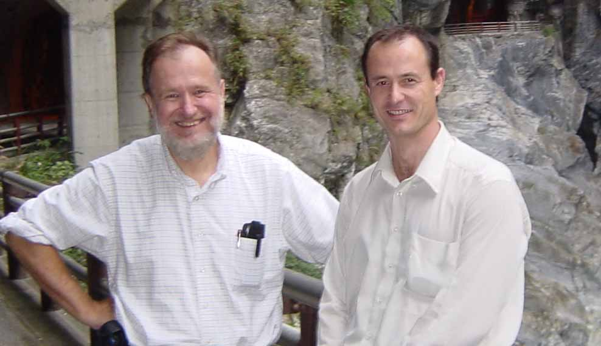

Wolfgang Christian (left) and Francisco Esquembre
|
Wolfgang Christian received his Ph. D. in Physics in 1976, from the North Carolina State University at Raleigh. He is currently the Brown Professor of Physics and Director of the Physics Computation Center at Davidson College, North Carolina, and a Fellow of the American Physical Society. His academic expertise includes laser spectroscopy, computational physics, and the use of technology for physics education. Wolfgang is the originator of Physlets and the author of eight books and numerous papers on the use of computers for physics teaching and learning. He is a past Chair of the American Physical Society Forum on Education and a Vice Chair of the 2006 Gordon Research Conference on Electromagnetism. Wolfgang has given numerous invited talks and contributed talks and has been a workshop leader for over twenty national and international faculty development workshops in the past five years. He has taught at Davidson College since 1983 and is currently the principal investigator of the NSF funded Open Source Physics and OPTIC projects. Wolfgang is also a member of the CoLoS group He can be contacted at wochristian@davidson.edu. |
Francisco Esquembre received the Ph.D. degree in Mathematics in June 1991, from the University of Murcia, Spain, where he works since 1986, holding a permanent job as 'Profesor Titular' (Assistant Professor) since 1994. His academic expertise includes differential equations, dynamical systems, and numerical analysis. Francisco has participated in numerous European, national and regional projects, both in the field of mathematics, and in the use of the computer as a tool to improve the teaching and learning of science. From 1995 until 1999 he held a position at the Regional Ministry of Education of the Region of Murcia, where he was General Director for Universities and Research. From 2002 to 2006 he has been Head of the Transfer Research Office of the University of Murcia. He currently teaches at the University of Murcia and his research includes computer assisted teaching and learning as well as simulation of scientific processes for didactical purposes. Francisco is a member of the CoLoS group since 1989 and participates in the Open Source Physics project. He can be contacted at fem@um.es. |